{kind=link}
Today, Ethem Sarisuluk, who get injured by police at 1th of June, during the protests in Ankara has lost his life. (Bugün)
Today, Ethem Sarisuluk, who get injured by police at the protests in Ankara at first of June, lost his life.
In Istanbul, Taksim was peaceful day and night time. In Ankara, passive protests took place in day time.
After 9 PM, most of the crowd gathered in Kennedy Street, also many protesters chanted slogans against pollice violence around dead Protestor Ethem Sarisuluk's home, Batikent. Consequently, reactions of police by water canons and tear gases took place.
Prime Minister Erdogan reacted the resolutions of European Parliament, also pointed the relation in between Gezi Park protests with Esed regime and Kemal Kılıçdaroğlu.
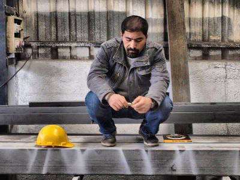

At 06:00 in the morning, Erdoğan tweeted these messages respectively.
- Right now, Turkey is the fastest growing country of the world with rate %3 growing rate.
- The decisions taken from European Parliament has some purposes. They can't accept our economic improvements.
- Peace process (not about Gezi Park Protests, it's about the peace in between PKK) is near to conclusion.
- Members of PKK are leaving our country, right now our citizens have safe mountain trips.
- During this days of historical significance, first Reyhanlı attack took place, afterwards Taksim Protests.
- Bessar Essed, is trying to play a dangerous game with Turkey, however we would avoid that, although Kemal Kılıçdaroğlu supports him.
- Within excuse of Gezi Park Protests, they play an open-theater game in Taksim.
- They make use of protests and hide the backstage plan. The front part of theater differs from the behind.
- We are aware that, the ones who provoke the society are well prepeared and equipped. They nest together with terrorist organizations.
- We are not accepting smear campaigns against us from foreign press.
- They are setting a trap with the aim of initiation of fight against ourselves.
- AKP youth groups would interfere with their plans.
- First of all, we are human beings, not a mass-produced items.
- Sometimes we are lenient, sometimes hard.
- The ones who have a score to settle with us are all welcome! We have elections. Some people, which are trying to become a social engineer would have a deep disappointment.
- We will unite, as now. We'll be great and alive. Together, we'll be a Turkey.
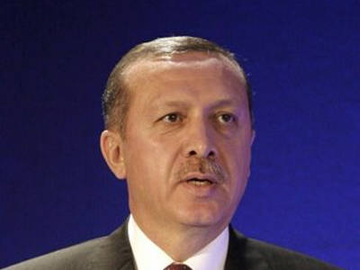
{kind=link}
Erdoğan met with former AKP mayors and gave following statements. (Hürriyet)
- I had a talk with some of of the genuine protesters. At this meetings, I underlined the necessity of breaking up with illegal organizations to them. The protesters in the committee declared that they have no connection to any illegal organisations. However, it does not matter, you stay at the same place, therefore you can't criticize my police. Near the dry, the damp will burn as well. [A Turkish saying telling that if you are with wrongdoers, nobody cares if you are innocent.]
- Gezi Park is quite dirty now. Some of them denominates "brilliant, sorry but I advice them to not try to cheat us. It smells urine, even some of them do number two there.
- Can our police use tear gas? Yes, tear gas is used in advanced democracies, such as in EU countries and USA. Its usage is a constitutional right. There are constant complaints against the police. They are asking for the freedom of people who are under custody.
- I have a request to the ones who are environmentalist and sincere in their feelings, in a brotherly manner. Please do not sadden us anymore, and leave this area. Let us face with the ones who has relations with terrorist organizations. Then, we would clean up the park and introduce it to the real owners: the citizens of İstanbul. That's the last warning from me to the parents, take care of your children, they should leave the park right now. Because, we can't wait anymore, park is not owned by the occupation forces.
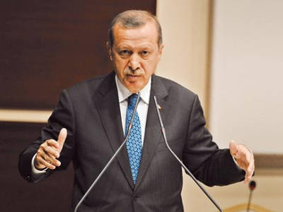
{kind=link}
Erdoğan also met with the city presidents of AKP and stated following points. (Radikal)
- Guys, we stayed here enough and we received your message. If your problem was Taksim Gezi Park, we've considered that. I'm not the one that would say "We understand your concerns" and not to do anything. Right now, there is an ongoing judicial process. We will first wait for the result of it and I don't know the outcome. If the decision would be against the construction of Artillery Barracks, we would follow that. Otherwise, we might have a public referandum in İstanbul and establish its result. I'm asking now, do dictators take the vote?
- Reyhanlı bombings was an abrupt case. It happened when the things for Turkey were quite perfect. Then, Taksim protests came up. Is there any relation between these events with the meeting of some CHP parliamenters with Beşşar Esed? Meeting was just before these events. What was the topic of that meeting? There is an ongoing sectarian civil war in Syria, and the situation that Beşşar Esed is well known. They are trying to involve us in this civil war, but we won't let it to happen. Despite the help of Kılıçdaroğlu to Syria, we won't let it happen.
- The rallies would be held in Ankara and İstanbul are not for numerical superiority against the protesters. Those are for elections in March 2014. (Akparti.org.tr)
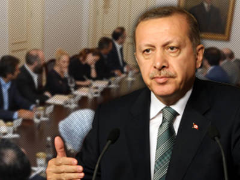
{kind=link}
Today, it's appeared that there was a tension in between Erdoğan and Secretary-General of DISK Arzu Çerkezoğlu during the meeting that was held yesterday. Erdoğan stated that "Most of the representers from artists and non-governmental ogranisations were quity happy at the end of the meeting. However, one of extreme trade unionist stated that 'It is not an architectural case anymore, it is a sociological problem.' How come a politician have no idea about sociology? If we were not able to analyse society in a sociologic manner, we could have never reached to this point."
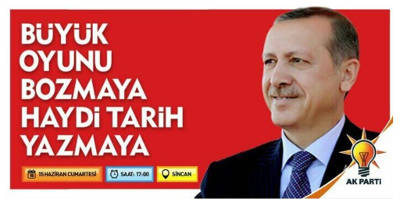
{kind=link}
Tomorrow, rally of AKP would take place in Ankara, Sincan. It says: "To disrupt the great game, to write history."

A banner calling for the rally that will be held tomorrow.
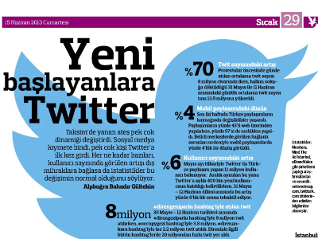
{kind=link}
According to Radikal, the daily tweets from Turkey raised up to 13.5 million, from 8 million, in between May of 31 and 11th of June. There were 8 million tweets in between May of 31 and 12th of June, with #direngeziparkı. Mehmet Ali Alabora's tweets were the most shared ones in all among the popular accounts, such as Red Hack, Okan Bayülgen.
{kind=link}
BBC suspended the contract in between NTV, because of not publishing the following news. The subject was lack of press freedom in Turkey. (BBC)
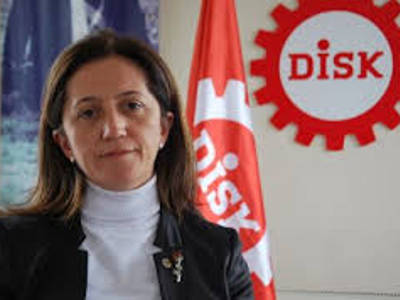
{kind=link}
Laterly, Secretary-General of DISK Arzu Çerkezoğlu had the following statement: "At the meeting, the convesation was about the trees and architectural concerns. After a while, I took the floor and said: 'If we had this meeting at 25th of May, we would talk about architectural concerns and trees. However, right now 4 people lost their lives... People take to the streets... If we came here for a solution, since we all and you both are here for this now, we have to talk the truth. Tons of people are saying something to you. Shouldn't we talk about that? Right now, it is a sociological problem, not just a architectural case'. He intervened many times, during my speech. But, he overreacted when I said 'It is a sociological problem'. He raised his voice and stated: 'Who the hell are you to teach us sociology? We know sociology and psychology. You go too far by saying this.'"
{kind=link}
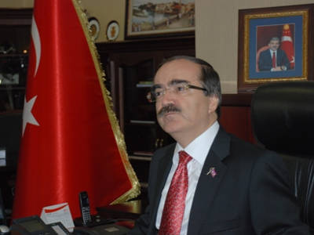
{kind=link}
Mayor of Adana, Hüseyin Avni Coş expressed his thanks to the pollice by SMS. "You put your life on the line and had a significant work for the sake of security and tranquality of society. At the work, you did not consider shift schedules. I would like to thank and congratulate all of you and your family. I kiss from your eyes." (Police in Adana has overtime for 18 days.) (Radikal)
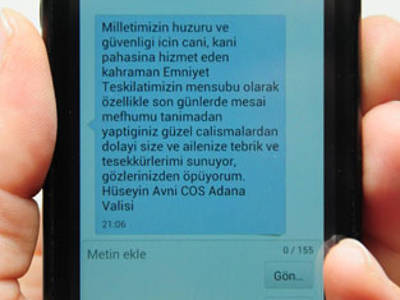
{kind=link}
Corresponding SMS sent by Hüseyin Avni Coş.
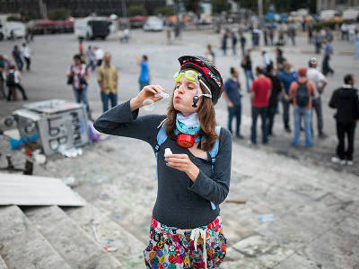
{kind=link}
Taksim, İstanbul.
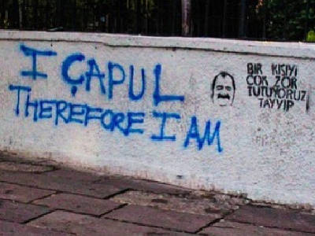
{kind=link}
Taksim, İstanbul.
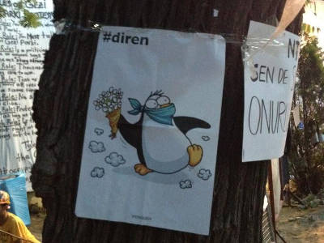
{kind=link}
Taksim, İstanbul.
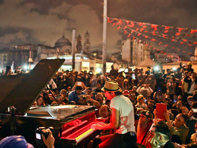
{kind=link}
In Taksim, German pianist Davide Martello played his piano for a second time. He stated that he played for democracy and freedom. (Radikal)

Taksim, İstanbul.
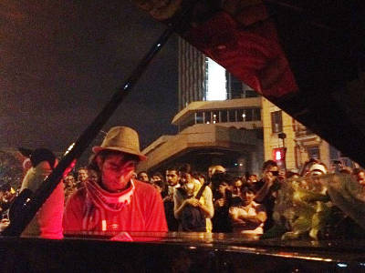
{kind=link}
Taksim, İstanbul.
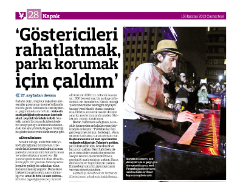
{kind=link}
Radikal had an interview with David Martello.
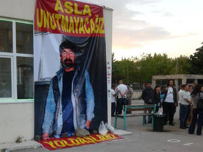
{kind=link}
In Batıkent, Ankara, people protested the death of Ethem Sarısülük by police brutality.
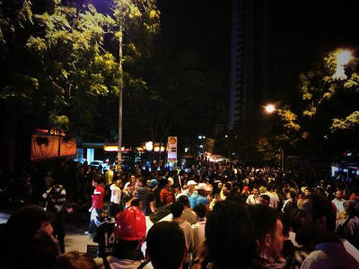
{kind=link}
Batıkent, Ankara.
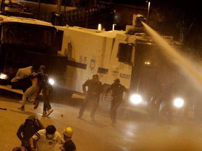
{kind=link}
Consequently police intervation took place in Batıkent, Ankara.
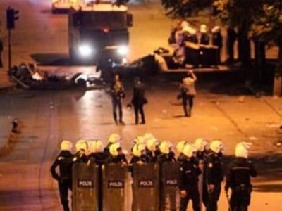
{kind=link}
Police intervened the protesters in Kızılay and Kuğulu park as in previous days. Also, many protesters have taken in custody and the amount of arrested people reached to 26. (Radikal)
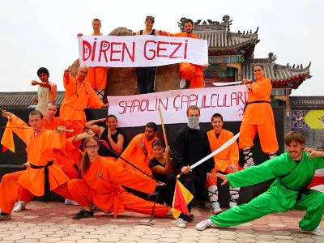
{kind=link}
China.
{kind=link}